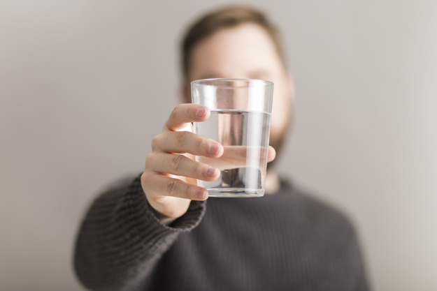

Про пиття води – важливі уточнення
Вода та не тільки
Традиційно говориться про те, що ми складаємося на 55-75% із води, вона є середовищем для перебігу усіх біохімічних реакцій в нашому організмі, теплоносієм та розчинником.Від кількості води залежить густина крові, вода необхідна для продукції синовіальних рідин, що змащують суглоби. Хрящі, що знаходяться між хребцями, потребують постійної достатньої кількості води – при зневодненні вони сохнуть і втрачають еластичність та спадаються, спричинюючи болі. Достатня кількість води також важлива для гарного стану шкіри, волосся та нігтів.
І після таких беззаперечних тверджень як не погодитися налити трьохлітрову банку води та намагатися її всіма силами випити ще до заходу сонця?
Однак важливо розуміти, що джерелом води є не лише власне сама вода, але й інші напої, а також їжа. Іншими словами і вівсянка з молоком, і чай, і суп також є джерелом води у вашому раціоні.
Окрім того, у процесі метаболізму білків, жирів, вуглеводів у нашому організмі також утворюється так звана ендогенна вода.
Уся ця сумарна вода і складає добовий об'єм рідини, який ми далі будемо обговорювати детальніше.
Треба зазначити, що все ж вибір на користь звичайної води , а не, скажімо, солодких напоїв є ефективною стратегією для зменшення кількості споживаних калорій та контролю маси тіла.
То скільки треба пити?
Кількість води, яку слід пити – індивідуальна для кожної людини і залежить від віку, статі, супутніх захворювань, рівня фізичної активності, клімату, вживання інших напоїв, окрім води, типу споживаної їжі та кількості її прийомів.
Наприклад, фізичне навантаження – при високих рівнях фізичної активності ми втрачаємо воду та електроліти із потом. Тому важливо пити воду до, під час, а також після фізичних вправ. Якщо ж вправи інтенсивні та тривають більш як годину, у нагоді стануть спеціальні спортивні напої, що допоможуть відновити втрачені із потом необхідні мінерали.
Багато залежить від середовища нашого перебування, а саме від температури та вологості повітря . Це впливає на інтенсивність випаровування вологи із поверхні нашої шкіри. Варто також пам'ятати, що на великих висотах, наприклад, на борту літака , дезнижені вологість та тиск – випити склянку води, поглядаючи за вікно ілюмінатора – саме воно.
Наше тіло інтенсивно втрачає воду та електроліти під час гарячки, блювання та діареї. При таких станах потрібно обов'язково звернутися до лікаря, та ні в якому випадку не нехтувати його порадами. Ймовірно, що вони включатимуть і споживання електролітів. Особливо серйозно це у випадку з дітьми – достатньо навіть декількох годин від початку захворювання до розвитку важких форм зневоднення з подальшим коматозним станом . Достатнє питво рекомендовано і при інфекціях сечового міхура та при сечокам'яній хворобі. Важливо пити достатню кількість води при вагітності та годуванні грудьми.
Варто також звернути увагу, що під час станів, що супроводжуються нежиттю та кашлем, достатня кількість спожитої рідини конче необхідна, щоб розрідити і полегшити евакуацію слизу з дихальних шляхів.
Іноді можна зустріти загальні цифри – для помірного клімату необхідна кількість сумарної споживаної рідини для чоловіків – близько 3,7 л, для жінок – 2,7 л.
Вчені вже декілька десятилітть вираховують рекомендовані індивідуальні кількості споживаної рідини і сьогодні один із найприйнятніших способів є такий розрахунок: 30-40 мл на кг маси тіла, а якщо це спекотний період року або приміщення із інтенсивним опаленням та пересушеним повітрям – 40-50 мл на кг.
У випадку лихоманки на кожний градус підвищеної температури додається 10 мл на кг маси тіла. При діареї чи блюванні необхідно споживати 50-60 мл рідини на кг маси тіла. А для годуючих мам рекомендована кількість питва на 800-1000 мл більша, ніж їх власна потреба у рідині.
Не варто плутати рекомендації по споживанні рідини (куди входить і вода, і напої, вода із їжі та вода, що отримана в ході метаболічних перетворень) із споживанням води.
Наприклад, якщо людина важить 70 кг і повинна отримати згідно із вище наведеними розрахунками 2100-2800 мл, це зовсім не означає, що вона повинна намагатися залити в себе трьохлітрову банку питва. Бо у цю кількість входить і 200-300 мл ендогенної води та від 400 до 1000 мл із їжі.
Таким чином, коли йде мова саме про воду та напої, які слід випивати щодня, то для пересічної людини ця цифра десь приблизно в межах 1-1,5 л на добу.
Недостатнє споживання води може проявлятися втомою, зниженим тиском, станом запаморочення, закрепами та утворенням каменів у нирках. Про зневоднення може також свідчити темний колір сечі. У нормі вона має бути солом'яного кольору. А якщо ж вона надто світла – можливо, ви перестаралися та п'єте вже надто багато води.
Важливо розуміти, що люди в старшому віці гірше відчувають спрагу і якраз для них актуальний підхід регулярно пити воду навіть коли не відчувається спрага. Дотримання цього принципу може бути запобіжним заходом у профілактиці інфаркту та надмірному відчутті втоми.
Узимку зазвичай ми п'ємо менше води. Однак – більше зігріваючих напоїв. І якщо їх не комбінувати із тістечками, то нічого поганого з того не буде. У будь-якому випадку, у вигляді склянки води чи чаю – треба продовжувати споживати достатню кількість рідини взимку, адже знижена вологість повітря в опалювальних приміщеннях сприяє сухості шкіри та очей.
Також буває так, що ми плутаємо відчуття спраги із відчуттям голоду . Часто це може спостерігатися під час напруженої інтелектуальної праці, коли ми зосереджуємося на завданні і забуваємо про все. Вже протягом кількох годин кількість води у нашій крові зменшується, її транспортні функції дещо послаблюються і мозку здається, що глюкози не достатньо. І він ... відправляє нас на пошуки солоденького. Загалом, коли перед вами інтелектуальні виклики і при цьому хочеться тістечка, спочатку випийте трохи води.
Як пити?
У принципі, якщо багато рухаєтеся і гарно почуваєтеся, то як завгодно і скільки хочеться. Однак, багато хто із нас все таки веде сидячий спосіб життя. Тому у такому випадку комфортним буде пити по 100-150 мл щогодини. Бо якщо довгий час не пити, а потім пити багато, то це може бути не надто приємним і для шлунку, який розтягується при великих об'ємах, і для судин та серця, адже об'єм крові різко зростатиме.
Пити більші порції води краще в проміжках між прийомами їди. Запивати їжу також можна – склянка води за обідом чи після нього – цілком нормально, якщо не пити її через силу.
Рідина досить швидко евакуюється із шлунка і не вона є найбільшою причиною виникнення відчуття важкості та сповільненого травлення.
Скоріше вона може додавати неприємних відчуттів, якщо і її, і їжі було надміру, тіло перебуває у сидячому положенні, на нього ще тисне тугий ремінь та одяг, а також вісцеральний жир у ділянці талії.
Усе це разом сповільнює шлунково-кишкову моторику, але першочерговою проблемою, як можна здогадатися, є не зовсім власне склянка випитої води.
Особливо відчутно дискомфорт після запивання їжі водою може бути для людей, що страждають на г астро-езофагальну рефлюксну хворобу. У такому випадку сфінктер між шлунком та стравоходом може не повністю замикатися і при споживанні великих об´ємів їжі і питва кислий вміст шлунку закидається в стравохід та обпалює його.
Чи має значення температура води? Найкомфортніше споживати воду кімнатної температури. Надто холодна вода натщесерце може трохи подразнювати порожній шлунок і прискорювати моторику ШКТ, тому вранці комфортніше випити склянку ледь теплої води.
Холодна вода може забрати у вас трохи калорій, бо організму необхідно витратити енергію, щоб її нагріти. Однак не варто надто фанатично ставитися до цього факту та розглядати це як якусь дієту.
Чи може бути забагато?
Надмірне споживання води іноді також може мати місце та викликати ускладнення здоров'я. Це може траплятися у випадку деяких захворювань щитовидної залози, нирок, серця, вживання препаратів що сприяють затримці рідини – нестероїдних протизапальних препаратів, деяких антидепресантів та знеболюючих. У таких випадках важливо обговорити це питання з лікарем. І, як вже було згадано, не варто плутати рекомендації по споживанні рідини із тим, скільки треба пити води.
Газована чи не дуже?
Споживання газованої води не впливає на міцність кісток, як припускалося раніше. Однак дослідники стверджують, що споживання газованої води є не надто дружнім до емалі зубів.
Стосовно впливу газованої води на нашу харчову поведінку, дані дещо суперечливі, бо з одного боку, вуглекислий газ, що міститься у газованій воді, наче б то може пригнічувати відчуття голоду , що було показано на прикладі 13 молодих жінок.
А з іншого боку є дослідження, які стверджують, що вуглекислий газ, який міститься у газованих напоях, може бути причетним до набору зайвої ваги через стимуляцію вироблення греліну – гормону голоду.
Дані були отримані спочатку на щурах, а потім на 20 чоловіках. Тому для того, аби безповоротно звинуватити газовану воду у тому, що знову хочеться чогось смачненького, не вистачає масштабніших досліджень та з залученням жінок.
Національна служба охорони здоров'я Британії зазначає, що не виключено, що такий зв'язок існує та рекомендує обирати звичайну воду для втамування спраги.
Треба також розуміти, що газована вода і газовані напої є по суті слабким розчином карбонатної кислоти і негативно впливають на шар захисного слизу оболонки шлунку, а відтак можуть спричинювати ерозії, або загострювати виразкову хворобу при постійному вживанні.
"Мінеральна-лікувальна"...
Обираючи воду, варто надавати перевагу столовій негазованій із мінералізацією не більше 0,5 г/дм3(виробники це вказують на етикетці).
Води з високою мінералізацією (мінеральні) іноді можна споживати із лікувальними цілями, однак лише після рекомендації лікаря. Саме лікар зможе порадити тип води, що буде доречним при тому чи іншому стані – гастриті, холециститі, панкреатиті, закрепах, нирковокам´яній хворобі чи артриті. Споживання мінеральної води можливе лише у стані ремісії хронічних хвороб, на фоні відносного здоров´я. А під час загострення хвороб ШКТ і сечової системи вживання мінеральних вод призведе до загострення цих станів.
Обережно, вода!
Вода є одним із шляхів передачі ряду збудників хвороб, у тому числі, холери, гепатитів та ряду гострих кишкових інфекцій. Тому до походження води, умов її зберігання потрібно ставитися відповідально.
Особливо це стосується подорожей.
- У туристичних поїздках, потрібно вживати бутильовану воду, та купувати її у надійних постачальників – у стаціонарних магазинах, аптеках, великих супермаркетах.
- Фрукти та овочі ліпше очищувати, якщо виникають питання у якості води, якою їх можна помити.
- Потрібно кип'ятити воду з крану.
- Ліпше надавати перевагу напоям без льоду, адже для виробництва льоду часто використовують ту ж саму воду з крану.
- Якщо ви споживаєте воду із бювету чи криниці, зверніть увагу на частоту та результати санепідеміологічної перевірки води із даного джерела.
- У постачальника води поцікавтеся її походженням та останніми результатами мікробіологічного контролю.
- Якщо користуєтеся індивідуальною пляшкою для води, не забувайте її регулярно ретельно мити, особливо це стосується дитячих пляшечок . Обирайте моделі із найпростішими конструкціями, які легко очищуються, використовуйте для цього окремий йоршик.

photo by freepic